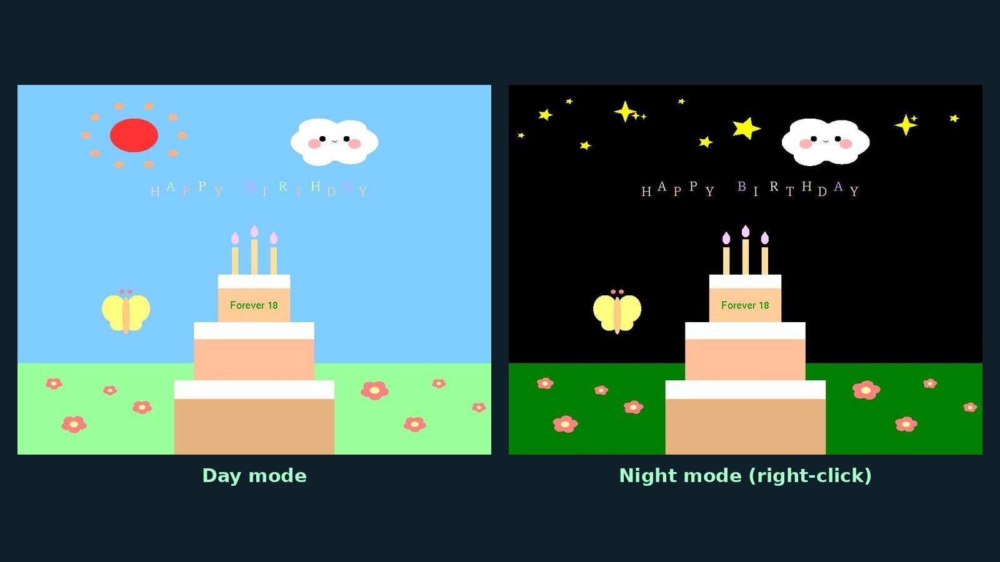

Challenge
Build a lively, interactive scene using only basic OpenGL primitives, without images or textures.
Computer graphics · C++ / OpenGL · Individual coursework
A real-time 2D scene built from geometric primitives, with animation, transformations and five kinds of user interaction.

Build a lively, interactive scene using only basic OpenGL primitives, without images or textures.
Wrote reusable shape helpers (rectangles, circles, petals, sun rays), timer-driven animation and keyboard/mouse callbacks.
A card with day/night modes, a candle you can blow out, rising balloons, a movable butterfly and a birthday message.
| Input | Result |
|---|---|
| Right click | Switch between day and night |
| Left click | Fade the candle flame (10 clicks to blow out) |
| W/A/S/D, R, Q/E | Move, rotate and scale the butterfly |
| Space | Release the balloons |
| Enter | Show the birthday message |
Primitives, interaction and animation.
Credits: Entirely my own work: every shape is drawn in code, with no external images or models. Uses the FreeGLUT library.